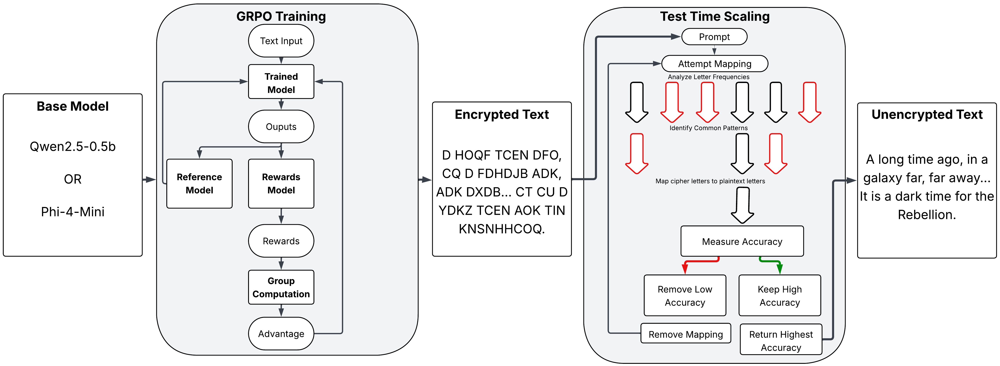

Optimizing Small Language Models for Cryptographic Applications
Spring 2025 CSCI 5541 NLP: Class Project - University of Minnesota
The Tokenizers

Evan Pochtar

Anthony Brogni
Evan Pochtar
Anthony Brogni
Our project explores the feasibility of using fine-tuned small language models for cryptographic analysis, specifically monoalphabetic substitution ciphers, to determine whether an LLM can effectively decode messages compared to algorithms or humans. Large language models such as ChatGPT and Deepseek-R1 struggle immensely with this task, despite their extensive knowledge, computational power, and parameters. To investigate this challenge, we fine-tune Qwen2.5-0.5B, a lightweight model with 500 million parameters, as well as Phi-4-Mini and evaluate their performance against larger models. For both models, we implement a feedback system (GRPO) and apply test-time scaling to enhance performance and test with state-of-the-art LLM algorithms for optimal results. Our findings reveal an inherent limitation in AI systems' current ability to decode monoalphabetic cipher text due to LLM's difficulty with complex language tasks.

What did you try to do? What problem did you try to solve? Articulate your objectives using absolutely no jargon.
We sought to develop a small, efficient language model capable of breaking simple substitution ciphers where each letter is consistently replaced by another letter. The problem we're addressing is understanding why current LLMs struggle with cryptographic challenges, and whether targeted training can improve their accuracy in this domain. To achieve this goal, we will evaluate a compact base LLM using state-of-the-art algorithms to determine if it can comprehend and solve these puzzles. As this challenge proves to be rather difficult, we also identify several explanations for this limitation and understand the fundamental constraints of LLMs in this area.
How is it done today, and what are the limits of current practice?
Current practices primarily rely on fixed statistical methods to identify word patterns and letter frequencies. These algorithms are relatively efficient to process and straightforward to implement (try it Here), and humans can solve them through methodical trial and error. Although this problem is solvable, our aim is to test an LLM's capacity to replicate this process and determine if it can be trained to understand and solve these puzzles similarly to humans. Current LLMs (including ChatGPT, Qwen, and Deepseek-R1) perform poorly on this task, rarely or never solving the puzzles correctly. However, Claude 3.7 Sonnet, a recent model, has demonstrated an exceptionally high accuracy rate, while Claude 3.5 Haiku fails at the same task. We bridge the gap between these approaches and demonstrate that a small model can be trained to improve their accuracy.
Who cares? If you are successful, what difference will it make?
Success with this project would demonstrate that LLMs can generalize in ways similar or better than humans and tackle a diverse set of problems. It would also establish that smaller, specialized models can outperform larger, general-purpose models on specific tasks, and that targeted training can be more effective than computational brute force. This could be applied to various challenges, from simple puzzles to complex problems requiring deep textual understanding. Conversely, failure would illuminate the fundamental limitations of these models and highlight the significant gap between current LLMs and Artificial General Intelligence.
What did you do exactly? How did you solve the problem? Why did you think it would be successful? Is anything new in your approach?
We fine-tuned a small language model (Phi-4-Mini and Qwen2.5-0.5b) using innovative techniques that enable adaptive learning during operation. Our methodology incorporates a feedback system (GRPO) and real-time output adjustment (test-time scaling). This approach is novel as these training techniques have not previously been applied to cryptographic tasks, particularly given that current large-scale systems struggle with this challenge. We anticipated success because these methods have proven effective at enhancing LLM performance in other domains, and focusing on a smaller model allows for more efficient and targeted training. Each output has a clear corresponding plain text, which is ideal for training, and we believe the model can learn to recognize patterns in the text. To implement this, we utilize a diverse dataset containing varied text samples such as those from AI vs Human Text Identification. We then programmatically apply monoalphabetic substitution ciphers to the text in Python and use these transformed texts as training data. Our reward function for our first training on 2 letter substitution was defined as half length and half accuracy to push the model to return the proper length output, then subsequent training on the same model used a purely accuracy driven reward function.
What problems did you anticipate? What problems did you encounter? Did the very first thing you tried work?
We anticipated performance limitations with smaller models and methodological challenges in matching the accuracy of larger models. Initial testing confirmed that even state-of-the-art models frequently failed at this task, validating our hypothesis while revealing that larger models offered no inherent advantage. Surprisingly, Claude 3.7 Sonnet demonstrated exceptional accuracy, contradicting our expectations. Our comparative analysis of reasoning versus non-reasoning LLM models revealed that non-reasoning models often solved more of the cipher, differing from our hypothesis that reasoning models would handle these complex tasks better. Early tests showed our small model frequently repeating cipher text verbatim or only partially solving sections, it also often produced long explanations without addressing the cipher itself. We eventually identified this as the model's inability to perform basic letter substitution, failing even at simple tasks like replacing 'a' with 'b' in a sentence. This required us to refine our training approach to encourage complete text solution and to first train fundamental substitution skills before attempting full text decryption. We did this by first replacing only 2 letters in a training paragraph, then 4, then 8, before finally training on to the full 26 letter final cipher substitution.
How did you measure success? What experiments were used? What were the results, both quantitative and qualitative? Did you succeed? Did you fail? Why?
We evaluated our project in three main avenues, one was the investigation of directed prompts and their performance, the second was evaluation of reasoning models and tokens generated versus accuracy, and finally a general evaluation of large, trained, and small LLMs on monoalphabetic substitution ciphers. To get an absolute accuracy score, we use character correctness percentage for equal-length outputs, and RapidFuzz for variable-length comparisons, which is a type of edit distance accuracy calculation. All metrics range from 0-100%, with 100% representing perfect accuracy. Our first round of tests investigated the performance of different types of prompts on the same task, specifically directed and undirected versions of the same prompt. In this context, directed prompts means that detailed step-by-step instructions were provided in the prompt, whereas undirected prompts simply asked the model to decipher the text. Surprisingly, through testing many different LLM's on both types of prompts, we found that the models performed better when given a more undirected prompt. We believe that this is because the extra directions tend to confuse the models and make them less likely to solve the task. This could be due to the fact that the models are not able to understand the extra instructions, or it could be that they are trying to follow the instructions too closely and not focusing on the task at hand. On all LLM's tested, only Qwen's accuracy improved with the more directed prompts, while all other models performed better with the less directed prompts. This led us to choosing a non-directed prompt for our final model.
We also evaluated the models' reasoning capabilities by analyzing the number of tokens generated and their accuracy, which we believe is a good indicator of the model's ability to solve the task. We hypothesized that models with more tokens would have higher accuracy, but our results showed that this was not the case. In fact, the models with the highest accuracy generated fewer tokens, indicating that they were more focused on the task at hand. This suggests that reasoning models may not be the best choice for this type of task, as they tend to generate more tokens and less accurate results, and tend to overthink. When it cannot solve the task, it will often generate a lot of tokens in an attempt to explain its reasoning, reach a token max limit, and then return a random English sentence that is not related to the task at hand. This evidence lead us to believe reasoning models aren't necessarily better for this task, and focusing on a non-reasoning model could help us both speed up training as well as create a more accurate final model.
Using these criteria, we've tested numerous mainstream large models to validate our hypothesis regarding their inability to solve this task. We've also evaluated our small model with and without our novel training methods, demonstrating that these approaches enhance model performance by about 6% for both Qwen and Phi. This rivals large models like Qwen2.5-Max, but cannot reach the heights of a model like Claude 3.7 Sonnet. This limitation stems primarily from small LLMs' difficulty with letter substitution and performing complex reasoning within constrained timeframes. For these evaluations, we used ten directed and undirected prompts with identical tasks but different texts and measured their accuracy.
Our research demonstrates that GRPO can train small models to improve accuracy scores, though the problem currently proves to be too difficult to achieve consistent cipher-solving capability. This limitation stems primarily from the model's difficulty with large letter substitution questions, complex iterative problems, as well as difficulty having models return only the plaintext with no added information. We've also shown that current state-of-the-art models generally fail at these problems, revealing fundamental LLM limitations in this domain, evident across their respective platforms. Claude 3.7 Sonnet stands as the exception, providing valuable insights into potential LLM capabilities for such tasks. We speculate the larger models' performance improvements come from the parameter count increases, which can enhance linguistic pattern recognition, even if they don't understand the problem at hand. Our current model faces one major constraint when attempting decryption, the model often tends to substitute letters incorrectly or generates random English text to maximize apparent accuracy. Future work testing with larger models, different training methods, and larger datasets is needed to potentially create a model that can match Claude 3.7 Sonnet's success on this task. Overall, we've identified an intriguing challenge that confounds current leading systems, suggesting the need for further research into LLM applications in cryptography.